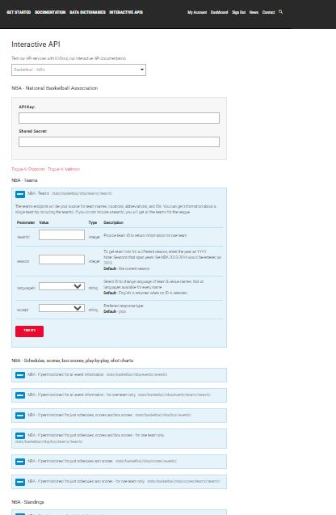
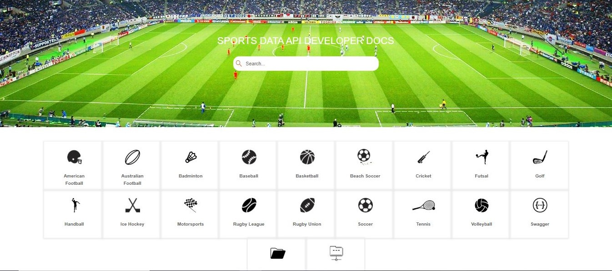
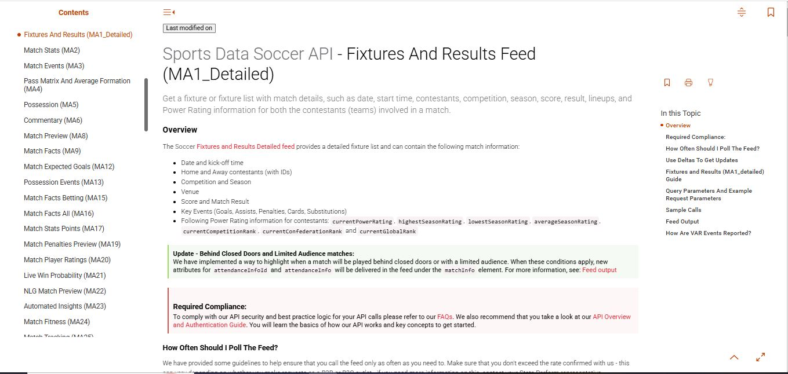
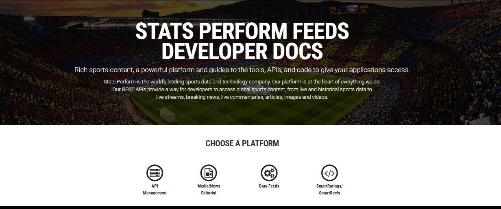
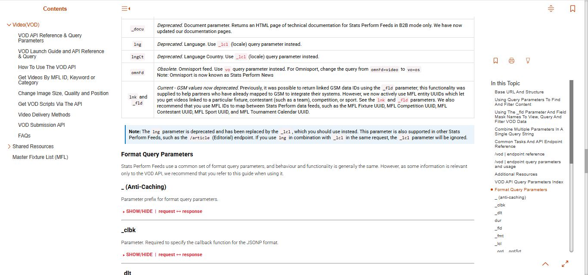

AMRUTHA GATTY
Technical Writer | API Documentation Specialist
Transforming complex APIs and software workflows into clear, developer-friendly documentation.
About Me
I am a Technical Writer with 9+ years of experience creating clear, accurate, and user-focused documentation for APIs, developer platforms, and enterprise software products. My expertise includes API documentation, interactive API references, authentication guides, implementation guides, technical specifications, user guides, and developer portal content.
Throughout my career, I have collaborated closely with software engineers, product managers, and cross-functional teams to transform complex technical concepts into intuitive documentation. I am passionate about improving the developer experience through well-structured content that supports product adoption, simplifies integrations, and helps users achieve success with confidence.
Skills
Documentation
- API Documentation
- User Guides
- Release Notes
- Knowledge Base
Tools
- Adobe RoboHelp
- Visual Studio
- Swagger
- Git/GitHub
- Confluence
- Postman
Technical
- REST APIs
- JSON
- XML
- HTML/CSS
- JavaScript
GenAI/AI
- ChatGPT
- Claude
- Cursor
- Prompt Engineering
Featured Projects

Interactive API Documentation Platform
A browser-based API builder letting clients explore, configure, and test live sports data endpoints — no manual URL crafting needed.
- Multi-sport coverage — Soccer, Tennis, MLS, Volleyball, Sumo & more
- Parameter-driven builder — fill in values, get a ready-to-use API URL instantly
- Tiered access — endpoints shown based on customer license level
- Rich data types — live scores, box scores, play-by-play, schedules & commentary
- Clean UX — toggle endpoints/methods, navigate large API surfaces effortlessly.
Sports Data API Documentation


End-to-end technical documentation for sports data feeds across multiple sports, leagues, and API versions.
- API overviews & guides — integration docs for sports data feeds
- Polling & delta updates — documented efficient data retrieval strategies
- Sample calls & responses — accelerated developer onboarding
- Parameters & data models — request, query params, and feed output structures
- Sport-specific guides — fixtures, results, events, and feed behavior per sport
- Cross-team collaboration — partnered with product & engineering for accuracy


Developer & Customer Documentation
Comprehensive documentation across multiple Stats Perform products — enabling customers to integrate real-time sports data, editorial content, graphics, video highlights, and performance insights
- Multi-product API docs — Graphics, Media, SmartReels, SmartRatings & Data Feeds
- Auth & schemas — workflows, request params, response schemas, data models
- Onboarding & portal — implementation guides and developer portal content
- Sample requests & troubleshooting — response examples and support resources
- Cross-team collaboration — partnered with engineering & product for accuracy
- Ongoing maintenance — kept docs current across sports, competitions & API releases
Writing Samples
Experience
Technical Writer - Stats Perform
2022 – Present
- Developed and maintained end-to-end developer documentation — API overviews, integration guides, authentication flows, error codes, and release notes — for enterprise-grade SaaS sports data platforms
- Authored interactive API reference documentation covering REST endpoints, JSON request/response structures, webhooks, WebSockets, and web player integrations
- Translated complex technical concepts into clear, developer-friendly documentation, reducing onboarding friction for engineering teams and third-party integrators
- Built responsive HTML5 documentation portals and online help systems using Adobe RoboHelp and Visual Studio, publishing via CMS and FTP pipelines
- Validated API requests, responses, and end-to-end workflows against live system behavior to ensure documentation accuracy and reliability
- Leveraged Google Analytics to track documentation performance, identify content gaps, and implement data-driven usability improvements
- Created ServiceNow troubleshooting guides and knowledge base articles, directly reducing recurring support ticket volume
- Maintained Confluence-based knowledge bases including user guides, internal SOPs, and process documentation for cross-functional teams
- Partnered with engineering, product, SMEs, and support teams to gather technical inputs, validate accuracy, and deliver documentation on schedule
- Managed the full documentation lifecycle — content planning, technical reviews, version control, publishing, and ongoing maintenance — aligned with agile product release cycles
Support Enginner - Stats Perform
2017 - 2022
- Provided technical support for REST API integrations, guiding customers through onboarding, configuration, and implementation for seamless adoption
- Investigated and resolved issues across REST APIs, Web Players, and WebSockets by analyzing logs, API samples, and test cases in collaboration with engineering teams
- Monitored production systems via Kibana to detect anomalies, diagnose performance issues, and proactively escalate defects through testing and deployment cycles
- Managed end-to-end customer incident workflows across ServiceNow, JIRA, Zendesk, and Salesforce, ensuring timely resolution and clear stakeholder communication
Education
Mangalore University
Master of Science (MSc)
Computer Science
Canara First Grade College
Bachelor of Science (BSc)
Physics, Mathematics, Computer Science